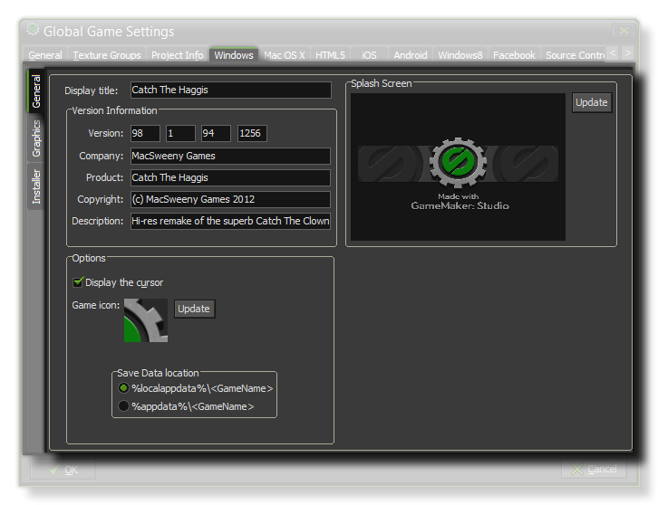
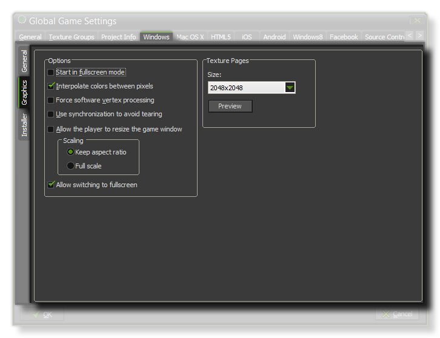
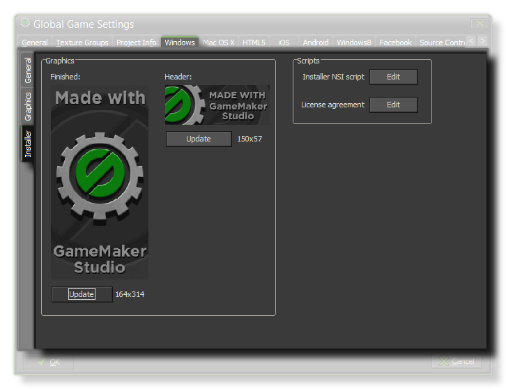

This Windows tab is split into three separate sub-tabs (accessible on the left of the window) to make changing and updating the information for your game clearer and less complicated. These tabs are explained in the following sections.

The General tab for Windows games is where you should supply the necessary information for Windows to display when your game has been installed and is running. This information goes in the
Version Information section, and should be filled out completely.
The other two sections of this tab are related to the way your final game is shown once started, with the Splash Screen being the graphic that is shown while your game is loading, and the Options
controlling whether you should display the standard Windows cursor or not and the icon that your game should show. You may also choose where the game bundle is to be installed to, either the "%localapopdata%"
or "%appdata%" folders.

The graphics options are those that you should configure to determine how your game will use the graphics card of your target Windows PC. The following options are included for you to modify:
- Start In Fullscreen Mode - If this is checked, the game will start in fullscreen mode.
- Interpolate Colors Between Pixels - Turns on interpolation, which basically "smooths" pixels. for crisp pixel graphics, it should be off, but if you have nice alpha blends and smoothed edge graphics it is better left on.
- Force Software Vertex Processing - This forces GameMaker:Studio to use the CPU for all graphics and is only recommended if there are compatibility issues with older machines.
- Use Synchronization To Avoid Tearing - This toggles v-sync on or off. Note, that if you have a game with a roomspeed of 120 and the player has a monitor with a refresh rate of 60, turning this option on will lock your game speed to 60 too.
- Allow The Player To Resize The Game Window - Checking this permits the user to change the size of the game window.
- Scaling - Here you can choose to maintain aspect ratio (so a 4:3 room will be "letterboxed" on a 16:9) or to scale fully (stretching the image to fit the full screen).
Finally there is the option to set the size of the Texture Page. The default (and most compatible) size is 2048x2048, but you can choose from anywhere between 256x256 up to a
whopping 8192x8192! There is also a button marked View which will generate the texture pages for this platform and then open a window so that you can see how they look. This can be
very useful if you wish to see how the texture pages are structured and to prevent having texture pages larger (or smaller) than necessary.
NOTE : Be aware that the larger the size of the texture page, the less compatible your game will be.
 Windows games are created with an installer (previous versions of GameMaker just made an *.exe) and here you can define the various settings and graphics that GameMaker:Studio will use when creating it. First of all we have the graphical options which will define the look of the installer itself :
- Finished - The graphic that appears on the "Finished" page of the installer. Must be in *.bmp format and measure 164x314px.
- Header - The graphic that appears while the installer is running. Must be in *.bmp format and measure 150x57px.
You can also point to a specific License Agreement (an example is supplied with GamMaker:Studio) and a custom NSI script (details
here) should you need one.